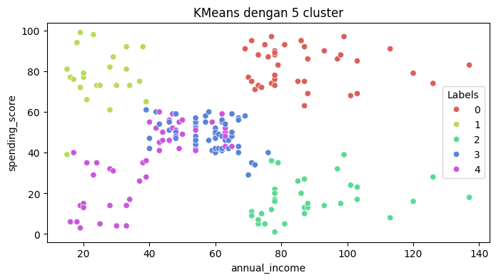

Unsupervised Learning#
import pandas as pd
df = pd.read_csv('datasets/Mall_Customers.csv')
df.head()
| CustomerID | Gender | Age | Annual Income (k$) | Spending Score (1-100) | |
|---|---|---|---|---|---|
| 0 | 1 | Male | 19 | 15 | 39 |
| 1 | 2 | Male | 21 | 15 | 81 |
| 2 | 3 | Female | 20 | 16 | 6 |
| 3 | 4 | Female | 23 | 16 | 77 |
| 4 | 5 | Female | 31 | 17 | 40 |
# change column name
df.columns = ['customer_id','gender', 'age', 'annual_income', 'spending_score']
df['gender'] = df['gender'].replace(['Female', 'Male'], [0,1])
/tmp/ipykernel_212157/2628508463.py:4: FutureWarning: Downcasting behavior in `replace` is deprecated and will be removed in a future version. To retain the old behavior, explicitly call `result.infer_objects(copy=False)`. To opt-in to the future behavior, set `pd.set_option('future.no_silent_downcasting', True)`
df['gender'] = df['gender'].replace(['Female', 'Male'], [0,1])
df
| customer_id | gender | age | annual_income | spending_score | |
|---|---|---|---|---|---|
| 0 | 1 | 1 | 19 | 15 | 39 |
| 1 | 2 | 1 | 21 | 15 | 81 |
| 2 | 3 | 0 | 20 | 16 | 6 |
| 3 | 4 | 0 | 23 | 16 | 77 |
| 4 | 5 | 0 | 31 | 17 | 40 |
| ... | ... | ... | ... | ... | ... |
| 195 | 196 | 0 | 35 | 120 | 79 |
| 196 | 197 | 0 | 45 | 126 | 28 |
| 197 | 198 | 1 | 32 | 126 | 74 |
| 198 | 199 | 1 | 32 | 137 | 18 |
| 199 | 200 | 1 | 30 | 137 | 83 |
200 rows × 5 columns
from sklearn.cluster import KMeans
X = df.drop(['customer_id', 'gender'], axis = 1)
clusters = []
for i in range(1,11):
km = KMeans(n_clusters = i).fit(X)
clusters.append(km.inertia_)
import matplotlib.pyplot as plt
%matplotlib inline
import seaborn as sns
fig, ax = plt.subplots(figsize = (8,4))
sns.lineplot(x=list(range(1,11)), y=clusters, ax=ax)
ax.set_title('find elbow')
ax.set_xlabel('clusters')
ax.set_ylabel('inertia')
Text(0, 0.5, 'inertia')
km5 = KMeans(n_clusters=5).fit(X)
X['Labels'] = km5.labels_
plt.figure(figsize=(8,4))
sns.scatterplot(x=X['annual_income'], y=X['spending_score'], hue=X['Labels'],
palette=sns.color_palette('hls', 5))
plt.title('KMeans dengan 5 cluster')
plt.show()
